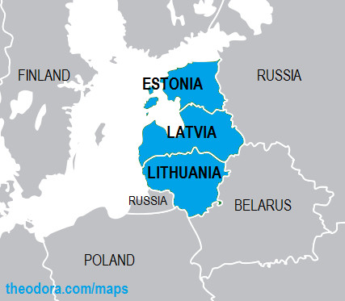

Η Εσθονία
Η Δημοκρατία της Εσθονίας (εσθονικά: Eesti Vabariik) είναι χώρα της βορειοανατολικής Ευρώπης και μία από τις τρεις βαλτικές χώρες.Είναι μια χώρα με πλούσια ιστορία, πανέμορφα τοπία και ποικιλία δραστηριοτήτων που μπορούν να προσφέρουν μια εξαιρετική εμπειρία για τους επισκέπτες.
Λόγοι να επισκεφθείτε την Εσθονία:
- Φυσική Ομορφιά: Η Εσθονία διαθέτει εκπληκτικά φυσικά τοπία, συμπεριλαμβανομένων πυκνών δασών, όμορφων λιμνών και παραλιών. Το εθνικό πάρκο Lahemaa προσφέρει μια μοναδική ευκαιρία να εξερευνήσετε τη φύση.
- Πολιτιστική Κληρονομιά: Η πόλη Tallinn, η πρωτεύουσα της Εσθονίας, έχει μια πλούσια μεσαιωνική πόλη με καλά διατηρημένα κτίρια, σοκάκια και πλατείες. Η Ταλίν είναι επίσης γνωστή για τα μουσεία και τις τέχνες της.
- Τεχνολογία: Η Εσθονία είναι μια από τις πιο ψηφιακά προηγμένες χώρες στον κόσμο. Η Ταλίν είναι γνωστή για την επιχειρηματική της φιλικότητα και τις καινοτόμες τεχνολογικές λύσεις.
- Ασφάλεια: Η Εσθονία θεωρείται μια ασφαλής χώρα για τους ταξιδιώτες. Οι κάτοικοι είναι φιλόξενοι και η χώρα έχει χαμηλά επίπεδα εγκληματικότητας.
- Εκδηλώσεις και Φεστιβάλ: Η Εσθονία φιλοξενεί διάφορα φεστιβάλ και εκδηλώσεις καθ' όλη τη διάρκεια του χρόνου, συμπεριλαμβανομένων μουσικών, πολιτιστικών και τροφοδοσιακών εκδηλώσεων.
|

|